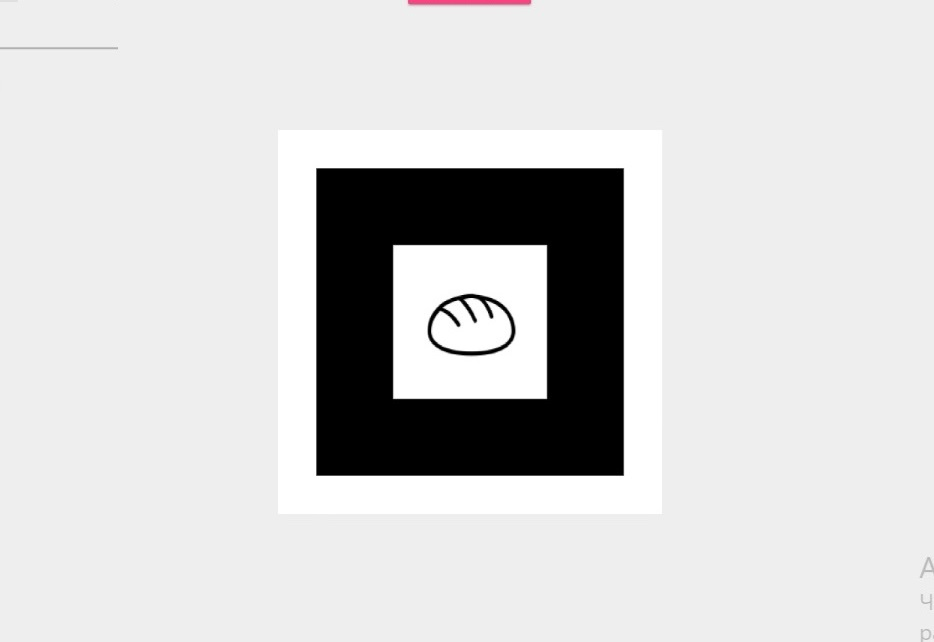

Как создать свой маркер на AR.js
Инструкция
Итак, после создания нашего первого AR.js-приложения, нам стоит заменить стандартный маркер hiro на свой, более подходящий для нашей цели. Это сделать легко — с помощью AR.js Marker Training.
Алгоритм
-
Заходим на сайт AR.js Marker Training
-
Нажимаем на розовую кнопку «UPLOAD», чтобы загрузить свою картинку в соответствии с правилами. Я загрузил простую картинку хлеба, чтобы в будущем создать его проекцию.
 -
Мы также можем изменить внешний вид, меняя значения pattern ratio и image size, где Pattern Ratio регулирует толщину обрамляющего квадрата, а Image size позволяет настроить чёткость изображения
Но я Вам не советую менять эти значения. Потому что маркер может сломаться. Так было у меня, когда я сделал Pattern Ratio максимальным -
Скачиваем созданный маркер нажатием по кнопке DOWNLOAD MARKER. И переносим его в папку с проектом, чтобы наше приложение знало какой маркер искать.
-
Также скачиваем изображение маркера, чтобы было на что наводить. Для этого жмём по DOWNLOAD IMAGE.
Полученное изображение сохраняем куда хотим. Можно на будущий сайт. Можно распечатать его. Я выбрал второе, чтобы можно было в реальном мире увидеть парящий объект, пусть и через камеру.
Если у Вас цветной маркер, но чёрно-белый принтер, сделайте маркер чёрно-белым. Иначе приложение не найдёт маркер по цвету.
Таким образом мы стали ещё на шаг ближе к смешанной реальности смешанной реальности. Круто?
Обновление кода и результат
После того, как мы создали метку, нам нужно поменять код, чтобы приложение искало не стандартную метку, а нашу.
Для этого всего-лишь замените строку a-marker preset="hiro" на
<a-marker preset="custom" type="pattern" url="./custom_marker/custom.patt">,
где значение арибута url является путём к Вашему маркеру.
Теперь можно обновлять код Вашего приложения, чтобы с успехом навести камерой на уже свой маркер.